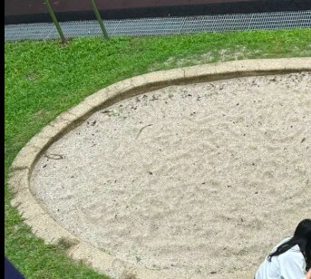

Quiet acts of educational tenderness — thank you to two teachers, Su Ya-wen and Lai Hui-chu. After the heavy rain, the Hsinmin campus was fresh and clean, the air carrying the damp scent of earth. As sunlight slipped through the clouds, the green of the campus stood out all the more.
Just when no one had noticed, two moving figures appeared beside the campus sandpit. From a distance you could see them crouched at the edge, paying no mind to the post-rain mud, carefully pulling out the little weeds that had crept uninvited into the sand.
Their expressions were like those of someone tending the most precious treasure. This quiet dedication was all so that, when the next bell rang for recess, the children would have a clean, safe haven where they could run and play in the sand to their hearts' content.

It was not the kind of thing that calls for fanfare, yet it was a most genuine and delicate kind of educational love. With their own hands they cleared away hidden dangers for the children, so that the laughter here could echo free of worry. This is the most beautiful, most moving scene on the Hsinmin campus.
We sincerely thank Teachers Su Ya-wen and Lai Hui-chu. Thank you for warming the whole campus and protecting our children with this gentle, quietly toiling strength. How lucky we are to have you!
默默守護的教育溫柔 - 感謝蘇雅雯、賴惠珠兩位老師❤
大雨過後，新民國小的校園一片清新，空氣中帶著濕潤的泥土香氣。陽光穿過雲層灑下，校園裡的綠意更加顯眼。
就在大家都還沒注意的時候，校園的沙坑旁出現了蘇雅雯老師和賴惠珠老師這兩位動人的身影。從遠景看去，她們蹲在沙坑邊緣，清晰捕捉到她們不顧雨後泥濘，親自蹲下，細心地拔除沙坑裡那些不請自來的小雜草。
兩位老師的神情，就像在呵護最珍貴的寶貝。這份默默的付出，為的就是在下一次下課鐘響時，孩子們能擁有一個乾淨、安全，可以盡情奔跑、玩沙的「安心樂園」。
這不是一件需要敲鑼打鼓的大事，卻是一份最真實、最細膩的教育愛。她們用雙手，為孩子們剷除隱形的危險，讓這裡的笑聲可以無後顧之憂地迴盪。這是新民國小校園裡最美麗、最動人的風景。
我們誠摯地感謝蘇雅雯老師和賴惠珠老師，謝謝妳們用這份默默耕耘的溫柔力量，溫暖了整個校園，守護了我們的孩子。有妳們真好！❤️